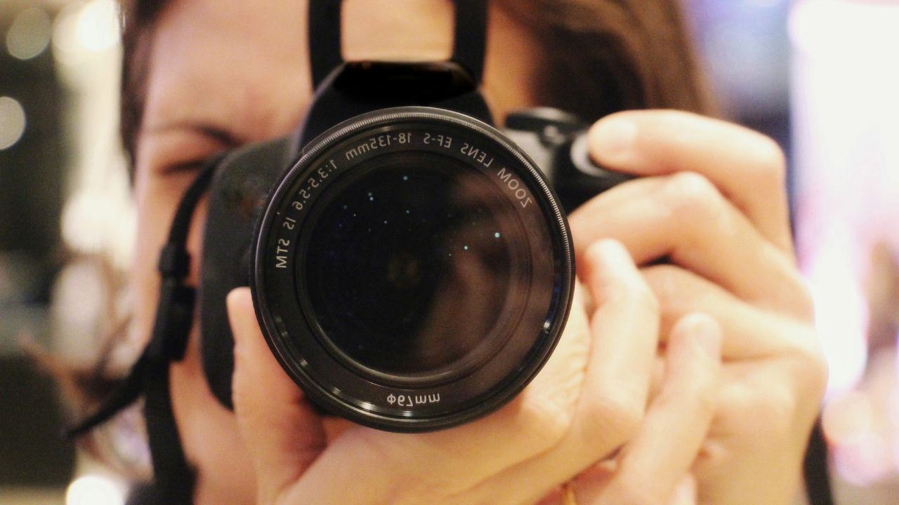
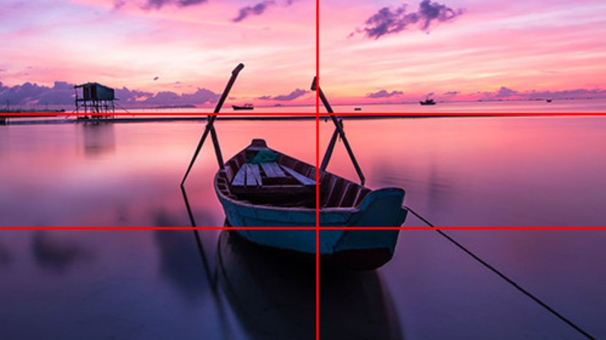
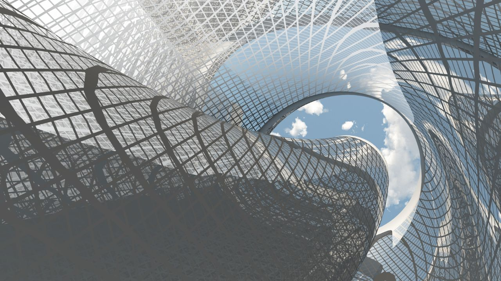
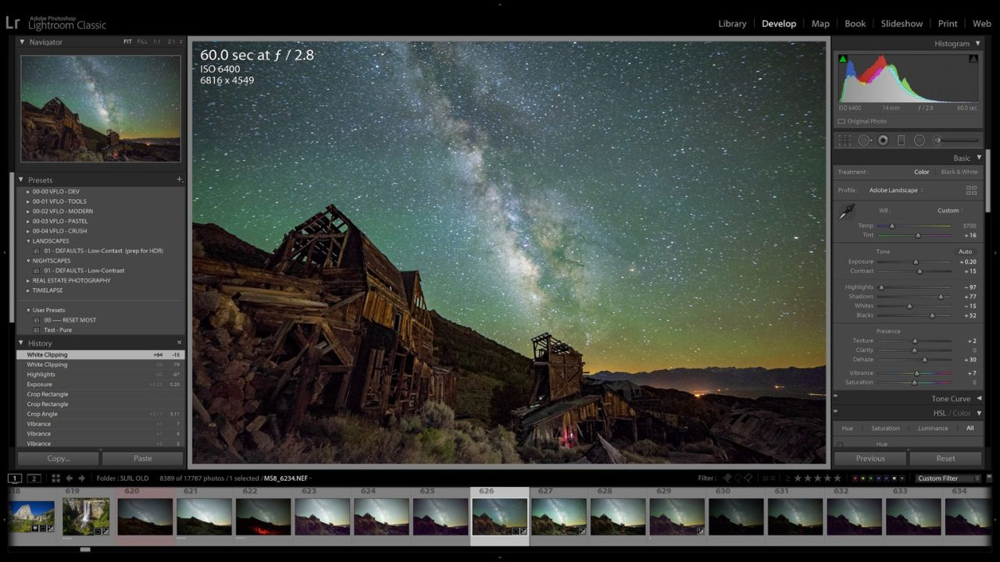
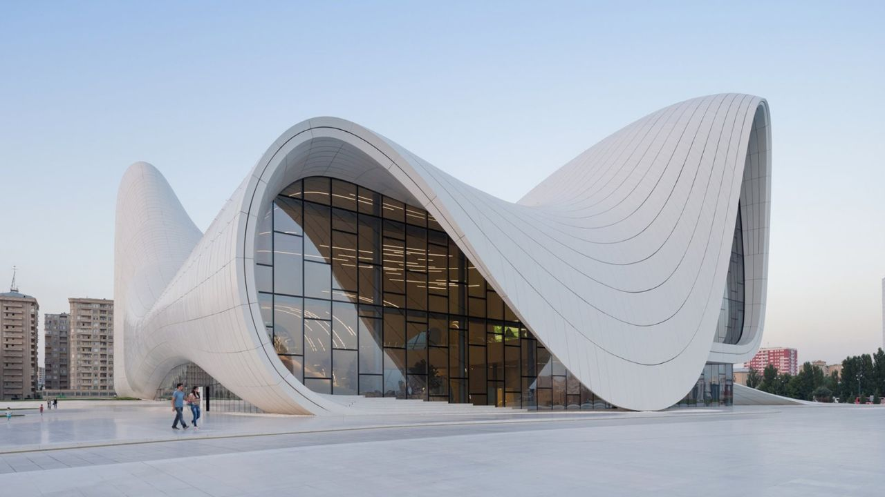
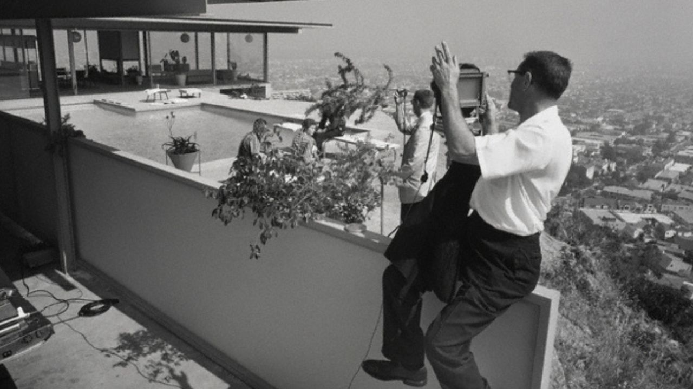

La photographie d'architecture demande une compréhension fine des volumes, de la lumière et du contexte. Voici les techniques essentielles pour révéler l'âme des bâtiments.
1. Choisir le bon angle
L'angle de vue détermine entièrement la perception du bâtiment. Variez les hauteurs, les distances et les axes pour trouver la perspective qui révèle au mieux les lignes architecturales.

2. Maîtriser la perspective
Les fuyantes verticales sont l'ennemi de la photographie d'architecture. Utilisez un objectif décentrable ou corrigez la perspective en post-production pour préserver la verticalité des lignes.

3. Travailler la lumière
La lumière sculpte les volumes et révèle les textures. Les heures dorées offrent une lumière chaude et directionnelle idéale pour mettre en valeur les reliefs.
4. Capturer les textures
Béton, verre, métal, bois : chaque matériau raconte une histoire. Approchez-vous pour révéler les détails et les textures qui caractérisent l'œuvre architecturale.

5. Soigner la post-production
Lightroom permet de corriger la perspective, d'équilibrer les contrastes et de révéler les détails dans les ombres et les hautes lumières. Un travail subtil préserve l'authenticité du bâtiment.

6. Photographier de nuit
L'éclairage artificiel transforme un bâtiment et révèle une dimension différente. Les heures bleues offrent un équilibre parfait entre lumière naturelle et artificielle.
7. Intégrer le contexte
Un bâtiment ne vit jamais seul. Son environnement urbain, naturel ou humain participe à son identité. Élargissez parfois le cadre pour raconter cette relation.

8. S'inspirer des grands maîtres
Le travail de Julius Shulman, Iwan Baan ou Hélène Binet est une source d'inspiration inépuisable. Étudiez leurs choix de composition, de lumière et de moment.

La photographie d'architecture est une discipline rigoureuse qui demande de la patience et un œil attentif. Prenez le temps d'observer, et le bâtiment vous révélera son essence.